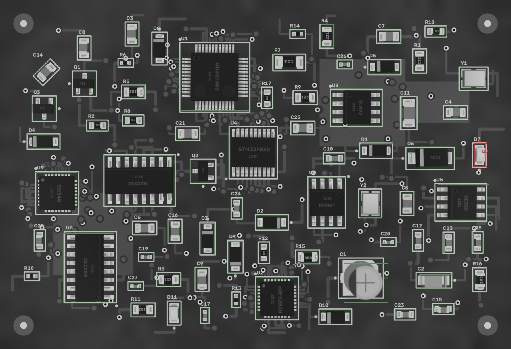
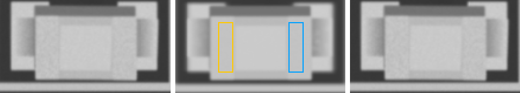

FAIL
2026-10-07 09:31:55 · позиций 70 · FAIL 1 · аномалий вне деталей 0 · невязка фидуциалов 0.05112562279487334 мм · ECC 0.9971

Кроп: живая плата (выровнена) | эталон (жёлтое — метка полярности,
синее — место метки при 180°) | карта отклонений σ.
MISSING — корпус не найден; MISMATCH — на месте не то, что в эталоне (голые площадки, другая деталь,
повреждение); POLARITY — развёрнута на 180° / метка не там; SHIFT / ROTATED — вне допуска;
ANOMALY — локальное отклонение от golden (мост, шарик, лишний припой, посторонний предмет).
| D7 LED_0805 · LED_0805 | FAIL POLARITY |  ncc 0.978 · ncc_thr 0.6 · ncc_180 0.76 · mad 1.7 · mad_thr 7.5 · mad_180 2.1 · mark_ncc -0.051 · mark_ncc_180 0.051 · dx_mm 0.023 · dy_mm 0.023 · dtheta_deg -0.0 · anomaly_px 0 |
| C1 220u · CP_Elec_5x5.8 | PASS | ncc 0.988 · ncc_thr 0.6 · ncc_180 0.535 · mad 4.6 · mad_thr 8.8 · mad_180 26.8 · mark_ncc 0.966 · mark_ncc_180 -0.732 · dx_mm 0.0 · dy_mm 0.0 · dtheta_deg -0.0 · anomaly_px 0 |
| C10 22p · 0603 | PASS | ncc 0.984 · ncc_thr 0.6 · mad 2.1 · mad_thr 8.5 · dx_mm 0.047 · dy_mm 0.0 · dtheta_deg -0.0 · anomaly_px 0 |
| C11 100n · 1206 | PASS | ncc 0.994 · ncc_thr 0.6 · mad 2.0 · mad_thr 7.6 · dx_mm -0.023 · dy_mm -0.023 · dtheta_deg -0.0 · anomaly_px 0 |
| C12 10n · 0603 | PASS | ncc 0.974 · ncc_thr 0.6 · mad 3.1 · mad_thr 8.1 · dx_mm -0.023 · dy_mm -0.047 · dtheta_deg -0.0 · anomaly_px 0 |
| C13 22p · 0603 | PASS | ncc 0.991 · ncc_thr 0.6 · mad 1.8 · mad_thr 7.9 · dx_mm -0.023 · dy_mm 0.023 · dtheta_deg -0.0 · anomaly_px 0 |
| C14 22p · 0805 | PASS | ncc 0.993 · ncc_thr 0.6 · mad 3.0 · mad_thr 7.7 · dx_mm -0.023 · dy_mm -0.023 · dtheta_deg -0.0 · anomaly_px 0 |
| C15 22p · 0603 | PASS | ncc 0.97 · ncc_thr 0.6 · mad 2.7 · mad_thr 7.8 · dx_mm 0.047 · dy_mm -0.093 · dtheta_deg -2 · anomaly_px 0 |
| C16 10n · 0805 | PASS | ncc 0.98 · ncc_thr 0.6 · mad 2.1 · mad_thr 7.9 · dx_mm 0.023 · dy_mm -0.023 · dtheta_deg -0.0 · anomaly_px 0 |
| C17 4u7 · 0402 | PASS | ncc 0.935 · ncc_thr 0.6 · mad 4.0 · mad_thr 9.3 · dx_mm 0.0 · dy_mm -0.023 · dtheta_deg -0.0 · anomaly_px 0 |
| C18 10u · 0603 | PASS | ncc 0.987 · ncc_thr 0.6 · mad 2.0 · mad_thr 7.8 · dx_mm 0.023 · dy_mm -0.023 · dtheta_deg -0.0 · anomaly_px 0 |
| C19 100n · 0402 | PASS | ncc 0.984 · ncc_thr 0.6 · mad 2.8 · mad_thr 8.6 · dx_mm -0.047 · dy_mm 0.0 · dtheta_deg -0.0 · anomaly_px 0 |
| C2 Tantalum_Case-A · Tantalum_Case-A | PASS | ncc 0.956 · ncc_thr 0.6 · ncc_180 0.479 · mad 2.0 · mad_thr 7.5 · mad_180 19.0 · mark_ncc 0.983 · mark_ncc_180 0.13 · dx_mm 0.093 · dy_mm 0.0 · dtheta_deg -0.0 · anomaly_px 0 |
| C20 1u · 0402 | PASS | ncc 0.947 · ncc_thr 0.6 · mad 4.7 · mad_thr 9.6 · dx_mm -0.023 · dy_mm 0.023 · dtheta_deg -0.0 · anomaly_px 0 |
| C21 10u · 0805 | PASS | ncc 0.98 · ncc_thr 0.6 · mad 2.6 · mad_thr 7.9 · dx_mm -0.047 · dy_mm 0.023 · dtheta_deg -0.0 · anomaly_px 0 |
| C22 10u · 0603 | PASS | ncc 0.993 · ncc_thr 0.6 · mad 2.7 · mad_thr 8.0 · dx_mm 0.0 · dy_mm 0.023 · dtheta_deg -0.0 · anomaly_px 0 |
| C23 10n · 0603 | PASS | ncc 0.986 · ncc_thr 0.6 · mad 1.7 · mad_thr 7.8 · dx_mm 0.023 · dy_mm 0.023 · dtheta_deg -0.0 · anomaly_px 0 |
| C24 22p · 0603 | PASS | ncc 0.99 · ncc_thr 0.6 · mad 3.3 · mad_thr 8.6 · dx_mm 0.0 · dy_mm 0.0 · dtheta_deg -0.0 · anomaly_px 0 |
| C25 1u · 0805 | PASS | ncc 0.992 · ncc_thr 0.6 · mad 2.3 · mad_thr 7.7 · dx_mm 0.0 · dy_mm 0.0 · dtheta_deg -0.0 · anomaly_px 0 |
| C26 1u · 0402 | PASS | ncc 0.98 · ncc_thr 0.6 · mad 2.6 · mad_thr 9.3 · dx_mm 0.023 · dy_mm 0.0 · dtheta_deg -0.0 · anomaly_px 0 |
| C27 1u · 0402 | PASS | ncc 0.963 · ncc_thr 0.6 · mad 2.5 · mad_thr 9.2 · dx_mm 0.0 · dy_mm -0.047 · dtheta_deg -0.0 · anomaly_px 0 |
| C3 10u · 0805 | PASS | ncc 0.98 · ncc_thr 0.6 · mad 1.7 · mad_thr 7.7 · dx_mm 0.07 · dy_mm 0.047 · dtheta_deg -0.0 · anomaly_px 0 |
| C4 4u7 · 0805 | PASS | ncc 0.985 · ncc_thr 0.6 · mad 1.7 · mad_thr 7.6 · dx_mm 0.023 · dy_mm 0.023 · dtheta_deg -0.0 · anomaly_px 0 |
| C5 10u · 0805 | PASS | ncc 0.99 · ncc_thr 0.6 · mad 2.2 · mad_thr 7.7 · dx_mm -0.047 · dy_mm 0.0 · dtheta_deg -0.0 · anomaly_px 0 |
| C6 10n · 0805 | PASS | ncc 0.994 · ncc_thr 0.6 · mad 1.9 · mad_thr 7.6 · dx_mm 0.0 · dy_mm 0.0 · dtheta_deg -0.0 · anomaly_px 0 |
| C7 100n · 0805 | PASS | ncc 0.993 · ncc_thr 0.6 · mad 1.8 · mad_thr 7.7 · dx_mm 0.0 · dy_mm 0.0 · dtheta_deg -0.0 · anomaly_px 0 |
| C8 22p · 0805 | PASS | ncc 0.99 · ncc_thr 0.6 · mad 3.2 · mad_thr 7.7 · dx_mm 0.0 · dy_mm -0.047 · dtheta_deg -0.0 · anomaly_px 0 |
| C9 10u · 0805 | PASS | ncc 0.979 · ncc_thr 0.6 · mad 2.2 · mad_thr 7.7 · dx_mm -0.093 · dy_mm -0.023 · dtheta_deg -0.0 · anomaly_px 0 |
| D1 SOD-123 · SOD-123 | PASS | ncc 0.992 · ncc_thr 0.6 · ncc_180 0.838 · mad 1.6 · mad_thr 7.2 · mad_180 12.0 · mark_ncc 0.991 · mark_ncc_180 0.112 · dx_mm 0.023 · dy_mm -0.023 · dtheta_deg -0.0 · anomaly_px 0 |
| D10 SOD-123 · SOD-123 | PASS | ncc 0.998 · ncc_thr 0.6 · ncc_180 0.742 · mad 1.4 · mad_thr 7.2 · mad_180 10.8 · mark_ncc 0.986 · mark_ncc_180 -0.095 · dx_mm -0.047 · dy_mm 0.0 · dtheta_deg -0.0 · anomaly_px 0 |
| D11 LED_0805 · LED_0805 | PASS | ncc 0.996 · ncc_thr 0.6 · ncc_180 0.872 · mad 2.4 · mad_thr 7.7 · mad_180 7.3 · mark_ncc 0.005 · mark_ncc_180 0.087 · dx_mm 0.07 · dy_mm -0.023 · dtheta_deg -0.0 · anomaly_px 0 |
| D2 SOD-123 · SOD-123 | PASS | ncc 0.994 · ncc_thr 0.6 · ncc_180 0.847 · mad 1.3 · mad_thr 7.1 · mad_180 10.1 · mark_ncc 0.834 · mark_ncc_180 -0.016 · dx_mm 0.0 · dy_mm 0.0 · dtheta_deg -0.0 · anomaly_px 0 |
| D3 SOD-123 · SOD-123 | PASS | ncc 0.995 · ncc_thr 0.6 · ncc_180 0.77 · mad 1.2 · mad_thr 7.3 · mad_180 10.9 · mark_ncc 0.982 · mark_ncc_180 -0.047 · dx_mm 0.023 · dy_mm -0.047 · dtheta_deg -0.0 · anomaly_px 0 |
| D4 SOD-123 · SOD-123 | PASS | ncc 0.992 · ncc_thr 0.6 · ncc_180 0.852 · mad 2.0 · mad_thr 7.2 · mad_180 11.6 · mark_ncc 0.859 · mark_ncc_180 -0.012 · dx_mm -0.023 · dy_mm 0.047 · dtheta_deg -0.0 · anomaly_px 0 |
| D5 SOD-123 · SOD-123 | PASS | ncc 0.997 · ncc_thr 0.6 · ncc_180 0.818 · mad 1.0 · mad_thr 7.2 · mad_180 10.3 · mark_ncc 0.96 · mark_ncc_180 0.015 · dx_mm -0.023 · dy_mm 0.0 · dtheta_deg -0.0 · anomaly_px 0 |
| D6 SMA · SMA | PASS | ncc 0.984 · ncc_thr 0.6 · ncc_180 0.785 · mad 1.9 · mad_thr 7.2 · mad_180 8.2 · mark_ncc 0.882 · mark_ncc_180 -0.146 · dx_mm -0.023 · dy_mm -0.093 · dtheta_deg -0.0 · anomaly_px 0 |
| D8 SOD-123 · SOD-123 | PASS | ncc 0.996 · ncc_thr 0.6 · ncc_180 0.871 · mad 1.2 · mad_thr 7.2 · mad_180 10.8 · mark_ncc 0.976 · mark_ncc_180 -0.062 · dx_mm -0.047 · dy_mm 0.0 · dtheta_deg -0.0 · anomaly_px 0 |
| D9 SOD-123 · SOD-123 | PASS | ncc 0.99 · ncc_thr 0.6 · ncc_180 0.844 · mad 1.0 · mad_thr 7.2 · mad_180 10.2 · mark_ncc 0.729 · mark_ncc_180 -0.051 · dx_mm 0.047 · dy_mm 0.07 · dtheta_deg -0.0 · anomaly_px 0 |
| Q1 W1 · SOT-23 | PASS | ncc 0.985 · ncc_thr 0.6 · ncc_180 0.605 · mad 2.2 · mad_thr 7.4 · mad_180 5.1 · dx_mm 0.0 · dy_mm 0.047 · dtheta_deg -0.0 · anomaly_px 0 |
| Q2 J3Y · SOT-23 | PASS | ncc 0.957 · ncc_thr 0.6 · ncc_180 0.611 · mad 0.9 · mad_thr 7.3 · mad_180 32.5 · dx_mm 0.0 · dy_mm 0.023 · dtheta_deg -0.0 · anomaly_px 0 |
| Q3 S4 · SOT-23 | PASS | ncc 0.989 · ncc_thr 0.6 · ncc_180 0.679 · mad 1.6 · mad_thr 7.2 · mad_180 5.0 · dx_mm 0.023 · dy_mm -0.047 · dtheta_deg -0.0 · anomaly_px 0 |
| R1 220 · 0805 | PASS | ncc 0.992 · ncc_thr 0.6 · mad 4.5 · mad_thr 10.9 · dx_mm 0.0 · dy_mm 0.047 · dtheta_deg -0.0 · anomaly_px 0 |
| R10 4k7 · 0402 | PASS | ncc 0.987 · ncc_thr 0.6 · mad 5.4 · mad_thr 9.8 · dx_mm 0.023 · dy_mm 0.0 · dtheta_deg -0.0 · anomaly_px 0 |
| R11 1k · 0805 | PASS | ncc 0.988 · ncc_thr 0.6 · mad 5.8 · mad_thr 12.4 · dx_mm 0.047 · dy_mm 0.047 · dtheta_deg -0.0 · anomaly_px 0 |
| R12 100k · 0603 | PASS | ncc 0.984 · ncc_thr 0.6 · mad 5.7 · mad_thr 14.4 · dx_mm 0.023 · dy_mm -0.023 · dtheta_deg -0.0 · anomaly_px 0 |
| R13 220 · 0402 | PASS | ncc 0.986 · ncc_thr 0.6 · mad 4.1 · mad_thr 9.8 · dx_mm 0.0 · dy_mm 0.0 · dtheta_deg -0.0 · anomaly_px 0 |
| R14 4k7 · 0402 | PASS | ncc 0.986 · ncc_thr 0.6 · mad 2.0 · mad_thr 9.4 · dx_mm -0.023 · dy_mm -0.023 · dtheta_deg -0.0 · anomaly_px 0 |
| R15 0R · 0805 | PASS | ncc 0.988 · ncc_thr 0.6 · mad 4.3 · mad_thr 9.6 · dx_mm 0.047 · dy_mm 0.047 · dtheta_deg 2 · anomaly_px 0 |
| R16 10k · 0805 | PASS | ncc 0.99 · ncc_thr 0.6 · mad 4.5 · mad_thr 9.8 · dx_mm -0.047 · dy_mm 0.07 · dtheta_deg -0.0 · anomaly_px 0 |
| R17 10k · 0603 | PASS | ncc 0.986 · ncc_thr 0.6 · mad 2.7 · mad_thr 15.3 · dx_mm -0.07 · dy_mm -0.023 · dtheta_deg -0.0 · anomaly_px 0 |
| R18 10k · 0603 | PASS | ncc 0.992 · ncc_thr 0.6 · mad 4.4 · mad_thr 9.7 · dx_mm -0.023 · dy_mm 0.0 · dtheta_deg -0.0 · anomaly_px 0 |
| R2 220 · 0603 | PASS | ncc 0.98 · ncc_thr 0.6 · mad 5.6 · mad_thr 14.7 · dx_mm -0.07 · dy_mm 0.023 · dtheta_deg -0.0 · anomaly_px 0 |
| R3 220 · 0805 | PASS | ncc 0.993 · ncc_thr 0.6 · mad 3.5 · mad_thr 12.6 · dx_mm 0.023 · dy_mm -0.047 · dtheta_deg -0.0 · anomaly_px 0 |
| R4 220 · 0805 | PASS | ncc 0.991 · ncc_thr 0.6 · mad 5.6 · mad_thr 12.0 · dx_mm 0.0 · dy_mm 0.0 · dtheta_deg -0.0 · anomaly_px 0 |
| R5 10k · 0805 | PASS | ncc 0.993 · ncc_thr 0.6 · mad 3.3 · mad_thr 11.5 · dx_mm 0.0 · dy_mm -0.023 · dtheta_deg -0.0 · anomaly_px 0 |
| R6 220 · 0402 | PASS | ncc 0.974 · ncc_thr 0.6 · mad 3.7 · mad_thr 11.6 · dx_mm 0.047 · dy_mm 0.023 · dtheta_deg 2 · anomaly_px 0 |
| R7 10k · 1206 | PASS | ncc 0.996 · ncc_thr 0.6 · mad 3.1 · mad_thr 8.9 · dx_mm 0.023 · dy_mm 0.0 · dtheta_deg -0.0 · anomaly_px 0 |
| R8 220 · 0603 | PASS | ncc 0.986 · ncc_thr 0.6 · mad 6.1 · mad_thr 11.9 · dx_mm 0.0 · dy_mm -0.023 · dtheta_deg -0.0 · anomaly_px 0 |
| R9 220 · 0805 | PASS | ncc 0.996 · ncc_thr 0.6 · mad 3.0 · mad_thr 12.3 · dx_mm 0.0 · dy_mm 0.0 · dtheta_deg -0.0 · anomaly_px 0 |
| U1 GD32F303 · LQFP-48 | PASS | ncc 0.968 · ncc_thr 0.6 · ncc_180 0.739 · mad 1.0 · mad_thr 7.1 · mad_180 4.4 · mark_ncc 0.889 · mark_ncc_180 -0.206 · dx_mm 0.0 · dy_mm 0.0 · dtheta_deg -0.0 · anomaly_px 0 |
| U2 nRF52810 · QFN-32 | PASS | ncc 0.973 · ncc_thr 0.6 · ncc_180 0.768 · mad 1.3 · mad_thr 7.3 · mad_180 6.0 · mark_ncc 0.932 · mark_ncc_180 0.001 · dx_mm -0.023 · dy_mm -0.023 · dtheta_deg -0.0 · anomaly_px 0 |
| U3 TL072 · SOIC-8 | PASS | ncc 0.985 · ncc_thr 0.6 · ncc_180 0.686 · mad 1.1 · mad_thr 7.2 · mad_180 4.5 · mark_ncc 0.946 · mark_ncc_180 -0.011 · dx_mm 0.0 · dy_mm -0.023 · dtheta_deg -0.0 · anomaly_px 0 |
| U4 STM32F030 · TSSOP-20 | PASS | ncc 0.977 · ncc_thr 0.6 · ncc_180 0.811 · mad 1.2 · mad_thr 7.6 · mad_180 5.4 · mark_ncc 0.877 · mark_ncc_180 -0.103 · dx_mm 0.0 · dy_mm -0.047 · dtheta_deg -0.0 · anomaly_px 0 |
| U5 NE555 · SOIC-8 | PASS | ncc 0.976 · ncc_thr 0.6 · ncc_180 0.813 · mad 1.3 · mad_thr 7.5 · mad_180 5.6 · mark_ncc 0.969 · mark_ncc_180 0.01 · dx_mm 0.023 · dy_mm -0.047 · dtheta_deg -0.0 · anomaly_px 0 |
| U6 MAX232 · SOIC-16 | PASS | ncc 0.982 · ncc_thr 0.6 · ncc_180 0.862 · mad 1.0 · mad_thr 7.3 · mad_180 4.8 · mark_ncc 0.887 · mark_ncc_180 0.041 · dx_mm 0.0 · dy_mm -0.023 · dtheta_deg -0.0 · anomaly_px 0 |
| U7 MAX232 · SOIC-16 | PASS | ncc 0.938 · ncc_thr 0.6 · ncc_180 0.87 · mad 1.5 · mad_thr 7.2 · mad_180 3.5 · mark_ncc 0.579 · mark_ncc_180 -0.085 · dx_mm 0.0 · dy_mm -0.023 · dtheta_deg -0.0 · anomaly_px 0 |
| U8 LM358 · SOIC-8 | PASS | ncc 0.926 · ncc_thr 0.6 · ncc_180 0.802 · mad 1.9 · mad_thr 7.3 · mad_180 4.5 · mark_ncc 0.506 · mark_ncc_180 0.1 · dx_mm 0.023 · dy_mm 0.0 · dtheta_deg -0.0 · anomaly_px 0 |
| U9 CH340 · QFN-32 | PASS | ncc 0.973 · ncc_thr 0.6 · ncc_180 0.733 · mad 1.2 · mad_thr 7.2 · mad_180 6.5 · mark_ncc 0.992 · mark_ncc_180 0.021 · dx_mm 0.023 · dy_mm -0.047 · dtheta_deg -0.0 · anomaly_px 0 |
| Y1 Crystal_SMD_3225 · Crystal_SMD_3225 | PASS | ncc 0.987 · ncc_thr 0.6 · mad 1.9 · mad_thr 7.9 · dx_mm -0.023 · dy_mm 0.0 · dtheta_deg -0.0 · anomaly_px 0 |
| Y2 Crystal_SMD_3225 · Crystal_SMD_3225 | PASS | ncc 0.994 · ncc_thr 0.6 · mad 2.7 · mad_thr 7.7 · dx_mm -0.023 · dy_mm 0.0 · dtheta_deg -0.0 · anomaly_px 0 |